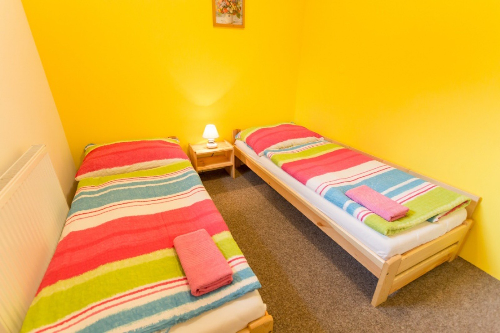
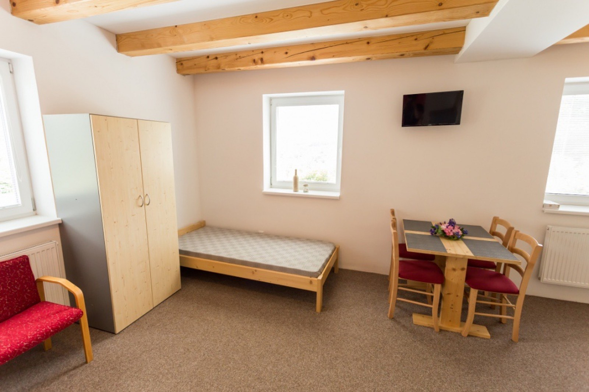
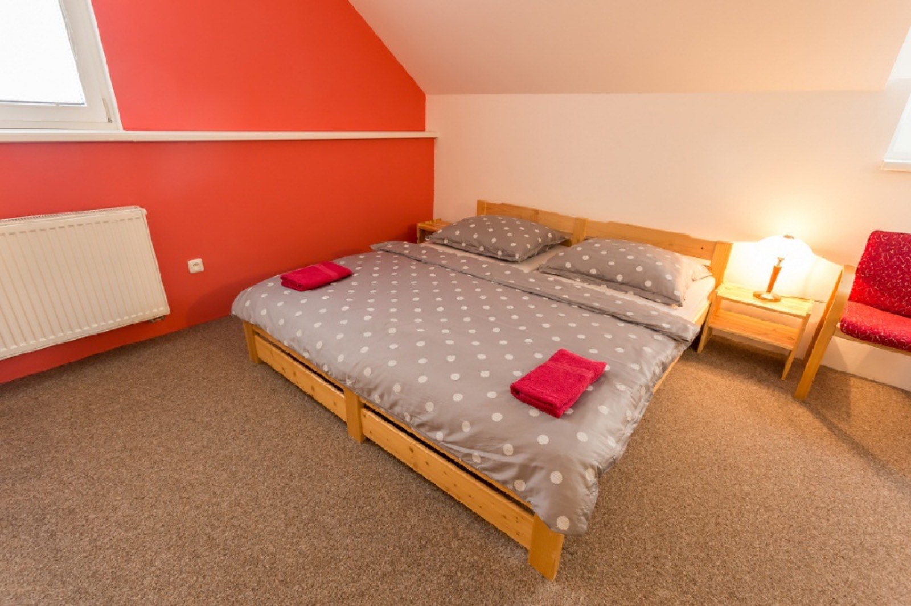
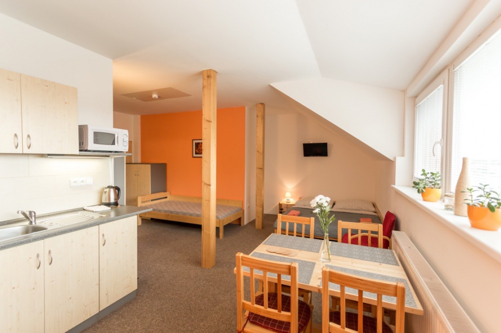
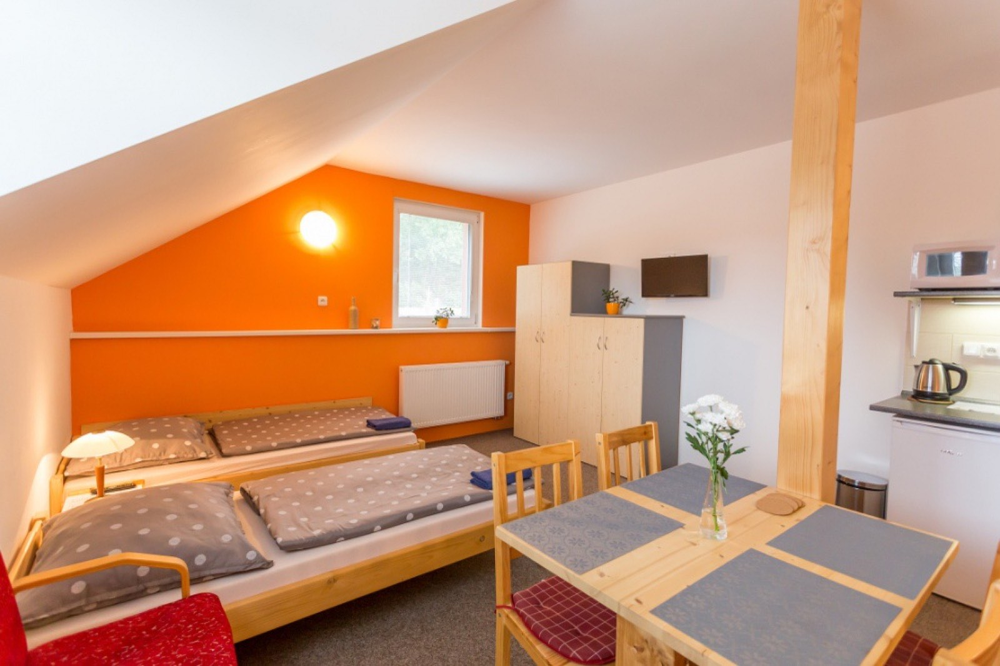
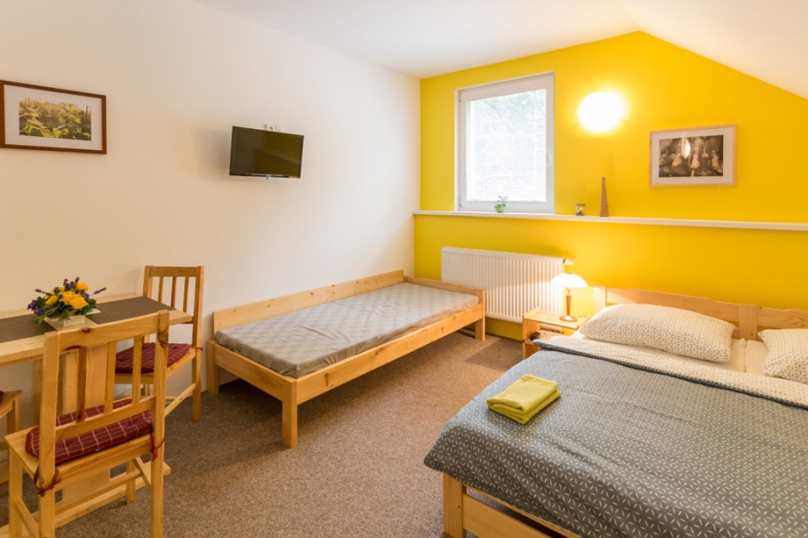
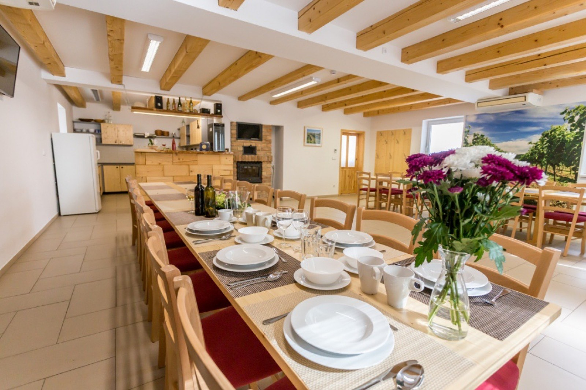
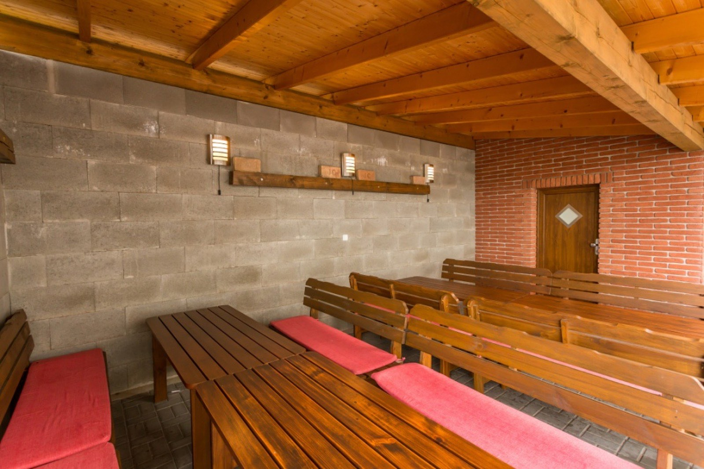

Šest pokojů pro 2 až 7 osob — každý s vlastním sociálním zázemím a téměř všechny s kuchyňkou.

Jednoduchý pokoj s oddělenou ložnicí. Sprchový kout s umyvadlem je součástí pokoje, WC v odděleném prostoru pod schodištěm. K dispozici mikrovlnná trouba a varná konvice. Menší vyvýšená okna na sever — v létě tu oceníte příjemné chladnější klima. Ideální pro nenáročné a sportovně založené hosty.

Prostorný pokoj v přízemí s vlastním sociálním zařízením a jednoduchou kuchyňkou. Jedno dvoulůžko a tři samostatné postele. Okna na východ a jih s pěkným výhledem.

Náš největší pokoj — dvě dvoulůžka, samostatná postel a patrová postel. Vlastní sociální zařízení a kuchyňka. Okna na východ a jih s velmi pěkným výhledem do okolí.

Prostorný pokoj s jedním dvoulůžkem a dvěma samostatnými postelemi. Vlastní sociální zařízení a jednoduchá kuchyňka. Situovaný na jih s velmi pěkným výhledem.

Dvoulůžko a dvě samostatné postele, v případě potřeby rozšíříme až o dvě další lůžka. Vlastní sociální zařízení a kuchyňka. Okna na jih a západ s pěkným výhledem.

Útulný pokoj s jedním dvoulůžkem a dvěma samostatnými lůžky. Vlastní sociální zařízení a jednoduchá kuchyňka. Situovaný na západní stranu.

Prostorná klimatizovaná místnost pro 40 osob (s možností rozšíření až na 50) s plně zařízenou kuchyní — elektrická kamna s velkou troubou, velká lednice, výčepní zařízení i kávovar.
Místnost není běžně přístupná ubytovaným — podmínky zapůjčení pro větší skupiny je potřeba dohodnout předem.
Domluvit termín
V sousedství hlavní budovy je částečně zastřešená terasa se stylovou udírnou a krbem — vybraná jídla připravíme v udírně nebo na otevřeném ohni. Z terasy vede vstup do nově vybudovaného vinného sklepa s cihelnou klenbou (3 × 8 m), kde zraje víno pro naše hosty.
Degustace a cenyPro vaše kola máme prostornou garáž pod dohledem kamerového systému — po výletu po Podyjí je máte v bezpečí.
Vozidla parkují na vlastním oploceném pozemku, rovněž pod kamerovým dohledem.
Stačí napsat termín, počet osob a vybraný pokoj.
Nezávazná rezervace Kompletní ceník